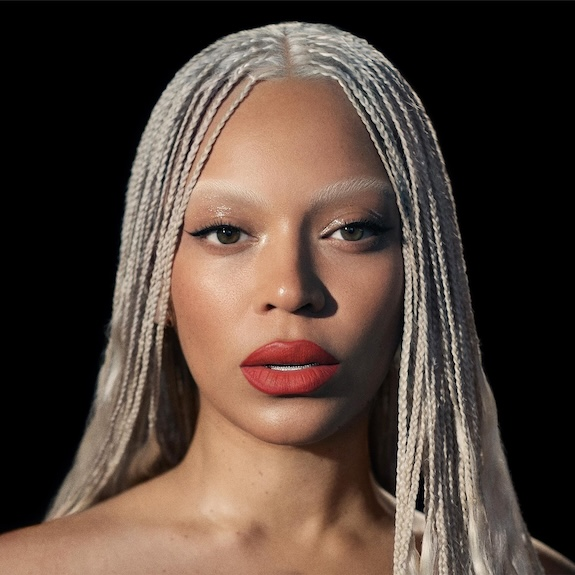

About the Artist
Beyoncé Giselle Knowles-Carter is a world-renowned singer, songwriter, and actress. Born in Houston, Texas, she became a household name as the lead singer of Destiny's Child before embarking on a solo career that has redefined the music industry. With a record-breaking number of Grammy Awards, her influence spans music, fashion, and social activism.
She is celebrated for her visual albums and her ability to blend genres, including R&B, Pop, Hip-Hop, and Country.